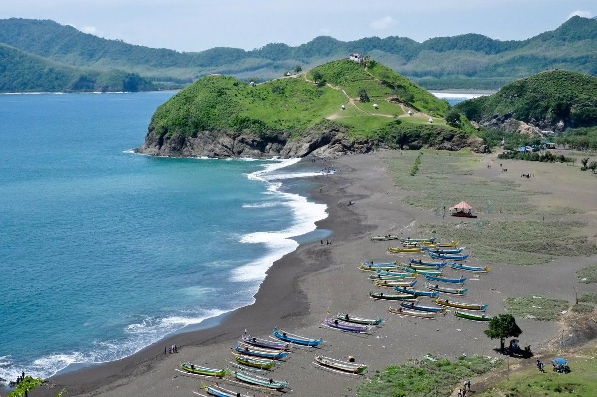

Boking Perjalanan
Pantai Payangan
Harga Tiket masuk : Rp. 5000
 |
Profil singkat payangan
Pantai Payangan salah satu pantai di Jember yang sangat unik dan menarik perhatian banyak wisatawan. Keunikan di Pantai Payangan adalah adanya 4 pantai, 3 bukit, dan 1 pulau di sekitar kawasan wisata ini.Pantai Payangan dapat menjadi salah satu destinasi wisata pantai yang dapat menjadi rujukan Anda untuk menghabiskan waktu liburan bersama keluarga.
Sejarah Pantai Payangan
Pantai Payangan memiliki perairan yang sangat jernih dan ombak yang tidak terlalu besar. Penduduk di sekitar pantai ini sebagian besar berprofesi sebagai nelayan sehingga Anda dapat melihat banyak perahu nelayan di sekitar Pantai Payangan. Pantai Payangan memiliki perairan yang sangat jernih dan ombak yang tidak terlalu besar. Penduduk di sekitar pantai ini sebagian besar berprofesi sebagai nelayan sehingga Anda dapat melihat banyak perahu nelayan di sekitar Pantai Payangan.
Lokasi Pantai Payangan
Alamat Pantai Payangan berlokasi di Dusun Payangan, Ds Sumberejo, Kec Ambulu, Kab Jember, Prov Jawa Timur. Jaraknya sekitar 32 kilometer dari pusat kota Jember dengan waktu tempuh perjalanan sekitar 55 menit berkendara melalui Jalan Kawi.
FOTO
 |
 |
 |
 |
 |